04 / Human–robot interaction · Feb 2018 – Jul 2019
Speech & touch for multi-robot systems
Complementing Speech Interaction Design with Touch for Multi-Robot Systems
Singapore University of Technology and Design · Research Assistant
How can one person supervise several robots while navigating, monitoring camera views, and identifying targets? This project explored a complementary speech-and-touch interface in a Unity simulation.
My contribution: I co-designed the interface with my supervising professor, created and refined Photoshop mockups through review stages, developed multimodal interaction prototypes, and contributed to user studies, analysis, and the paper.
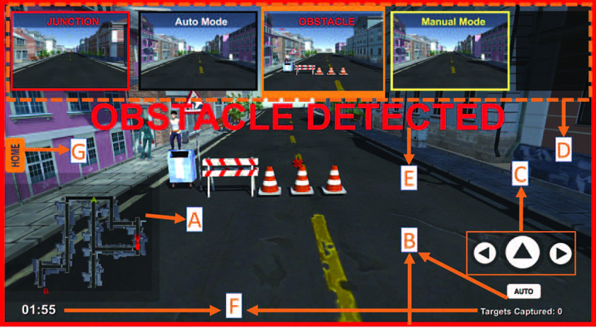
The interface in the published paper
The selected robot’s camera fills the main view, with controls and supporting information arranged around its edges. The paper describes an iterative design process that considered visual interference, foreground–background contrast, and selection feedback.
The study involved six participants operating one, two, and three robots. Task performance and perceived workload were examined using NASA-TLX.
Explore the interface design processPhotoshop reviews → panel behaviour → Unity implementation
The following project materials show how I worked through interface layout, visual contrast, and component behaviour before and alongside implementation. The Photoshop concepts and development screenshots document design exploration; they are distinct from the published interface shown above.
Stage 01 / Early Photoshop designs
Checking controls against changing backgrounds
Because controls and the map sit over a camera view, the background changes as the robot moves. In the first design phase, I reviewed the overlays against bright and dark scenes, considering their visibility and how much of the scene they covered.
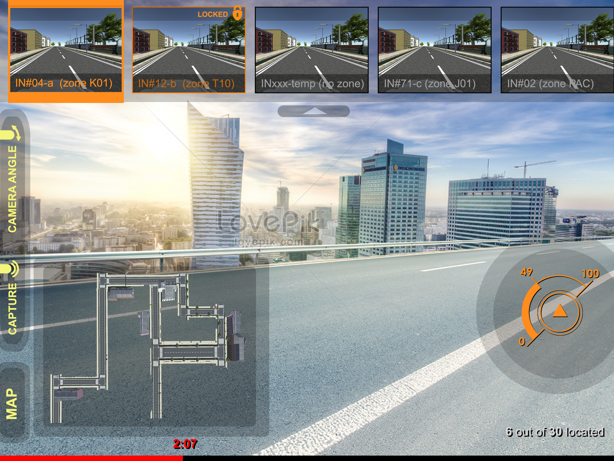
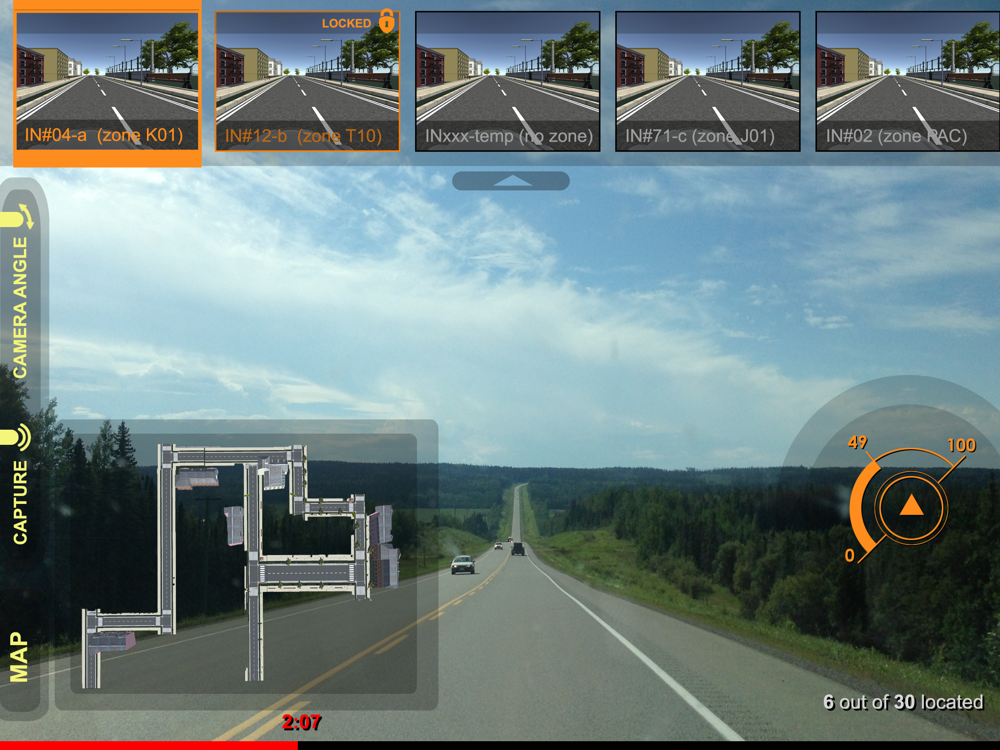
Design focus: foreground–background contrast, overlay visibility, and the balance between information and camera-view space. These are visual review examples, rather than a separate measured usability result.
Stage 02 / Refined Photoshop concepts
Defining controls, panels, and their states
Further review explored how the camera previews, map, and speed controller could behave. The mockups show both an information-rich view and more compact states, making the intended interactions visible before implementation.
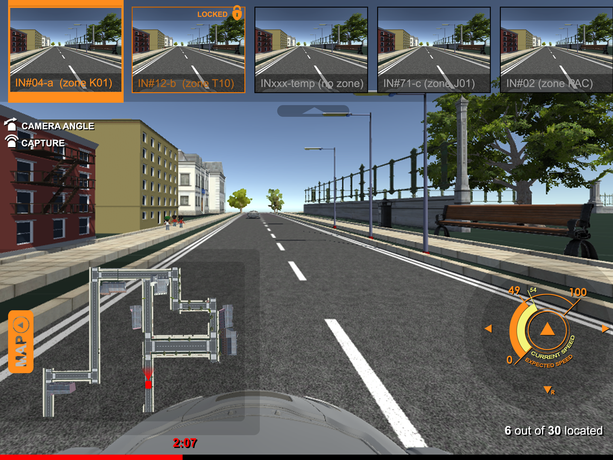
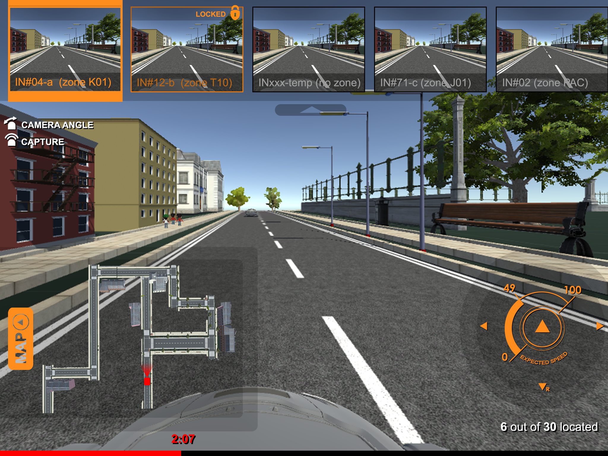
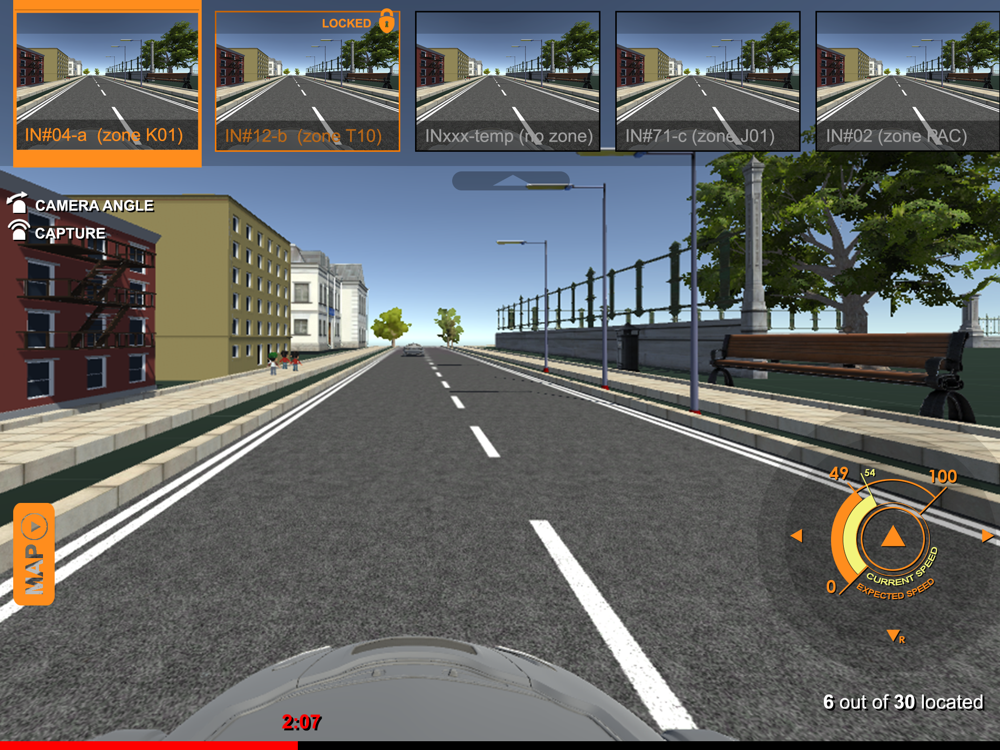
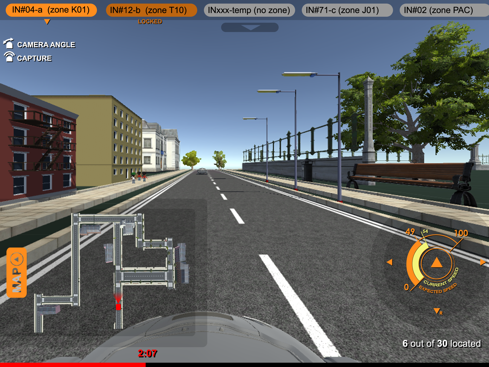
Design focus: panel visibility, consistent placement, state feedback, and reducing the screen area occupied by supporting views.
Stage 03 / Unity development
Bringing the interaction into a simulated mission
The Unity prototype places semi-autonomous robots in an urban search scenario. Robots follow routes but need operator input at junctions and when obstacles interrupt navigation. The operator can inspect the environment, aim the surveillance camera, and capture targets while monitoring progress.
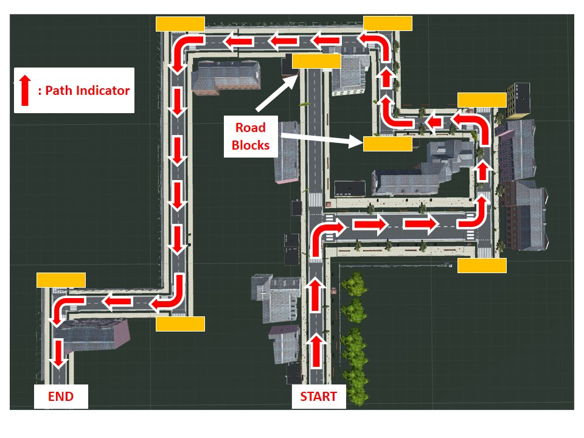
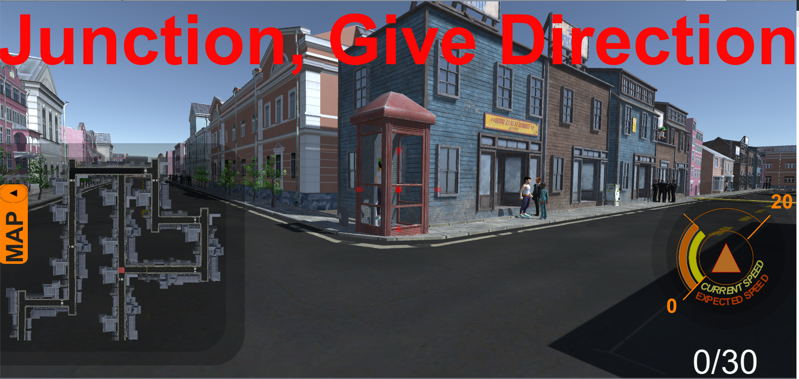
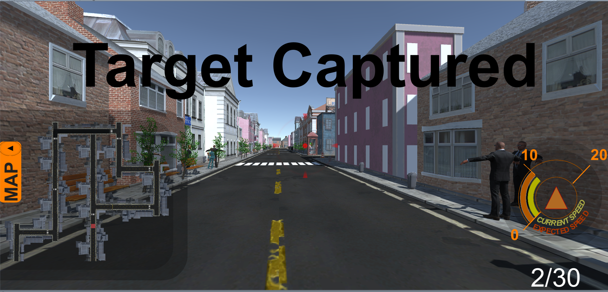
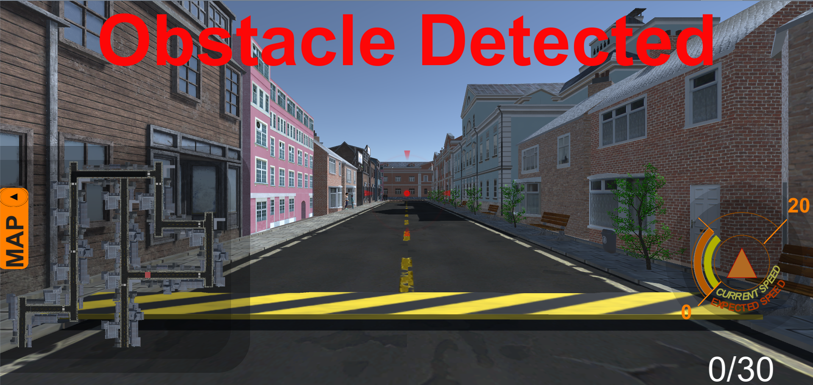
These are development screenshots extracted from the project manual. They illustrate the simulation and interaction scenarios, rather than documenting the exact final study interface or its results.
Photoshop designs and Unity development images from my SUTD project materials. Published interface: Figure 4 in Complementing Speech Interaction Design with Touch for Multi-Robot Systems (IEEE TENCON 2019). Only selected images are included; the original presentations are not linked.